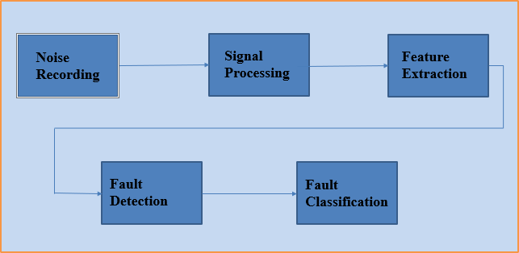

| Eat Code Sleep Repeat
| Eat Code Sleep Repeat


ML Model for the classification of Bearing faults
The Aim is to design a predictive maintenance system by
predicting the occurrence of defects in motors using the noise
emitted by the motors to determine the type of problem. There are
3 types of defects: INNER, ROLLER, OUTER. When the engine rotates,
the sounds is different and so if we record the sound emitted by
the engine, we can predict whether or not the engine is broken
and what kind of problem there is.During this project, I will study
three different to answer the initial problem: one using CNN, an other
one using feature extraction and a combinaison of both solutions
ML Model for the classication of Emails
Email usage has become a fundamental means of communication
for both businesses and personal use. Its widespread usability has
also led to an increase in the volume of email data. Email sorting
has become a problem due to volumes and if not properly done could
lead to inefficiency at work. Wasting time searching through unsorted
emails could lead to vulnerability of spam and phishing attacks during
that process. This paper looks at a comparative research of Naïve Bayes,
Neural Networks and SVM performance to classify emails.
©Gradious Technologies (P)Ltd-2023